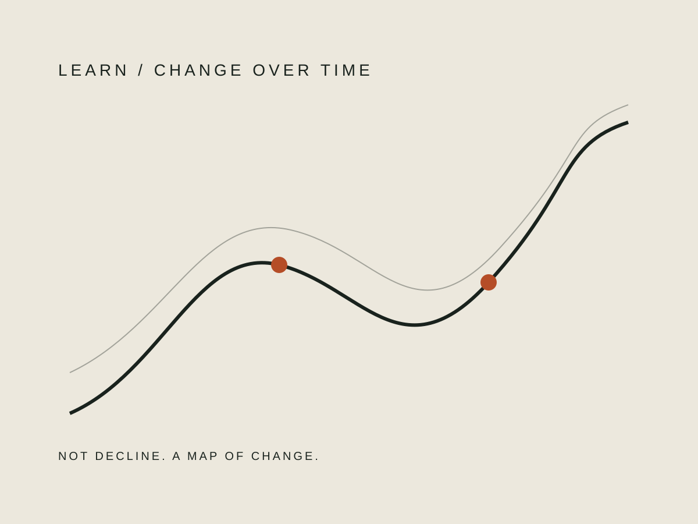

01
立つ、歩く、持つ。日常で必要な力を「筋トレをしているか」だけで判断しない。
疲れやすさ、階段、朝の重さ。ひとまとめに「年齢」で片づけず、筋力・持久力・睡眠・生活リズムへ分解する。50代の身体を、もう一度読み直すためのアトラスです。
3分で現在地を測る →20代の身体へ戻すのではない。
50代の身体を、使える状態に再設計する。
立つ、歩く、持つ。日常で必要な力を「筋トレをしているか」だけで判断しない。
息切れと疲れやすさを分け、全身持久力という視点から現在地を整理する。
寝ても取れない疲れを、睡眠時間だけでなく生活のリズムまで含めて見直す。

50代以降は持久力や握力など複数の身体機能が変化していきます。一方で、変化の速さも生活背景も人によって違います。だからこのサイトでは「体力年齢」ひとつで結論を出しません。

「疲れた」を一語で終わらせず、どの場面で、いつ、何が重くなったのかを見る。
運動、睡眠、食事を全部変えない。続けられる最小の行動から一つだけ選ぶ。
根性ではなく比較。できたことと、まだ重いところを見て次の地図を書き換える。
AGE IS NOT
A VERDICT.
IT'S DATA.
厚生労働省の身体活動・運動ガイドや健康づくり支援資料など、確認可能な公的情報を基礎にします。体力低下をすべて運動不足と決めつけず、必要な場合は医療機関への相談を優先します。